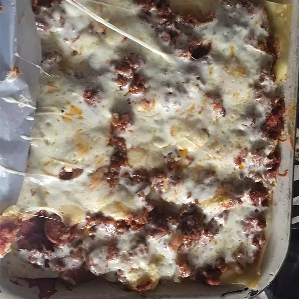

Lisa's Lasagna

Description
This is an easy lasagna recipe that anyone can make!
Ingredients
- 1 pound lean ground beef<
- 1 onion, chopped
- 1 green bell pepper, chopped
- 1 (16 ounce) jar spaghetti sauce
- 1 teaspoon Italian seasoning
- salt and pepper to taste
- 2 (6 ounce) cans tomato paste
- 2 1/4 cups water
- 1 pint part-skim ricotta cheese
- 1 egg
- 2 cups shredded mozzarella cheese
- 8 lasagne noodles, cooked and drained
Steps
- Brown meat with onions and bell peppers, and season to taste. Add tomato paste and water. Let simmer.drain.
- Preheat oven to 370 degrees F (190 degrees C). Butter a 9 x 13 inch baking dish.
- Begin layering all ingredients beginning with a few spoonfuls of tomato sauce. Follow with noodles, then ricotta mixture, and shredded mozzarella. Repeat until dish is filled.
- Bake at 375 degrees F (190 degrees C) about 35 to 45 minutes, until bubbly. Let cool a couple of minutes before cutting.